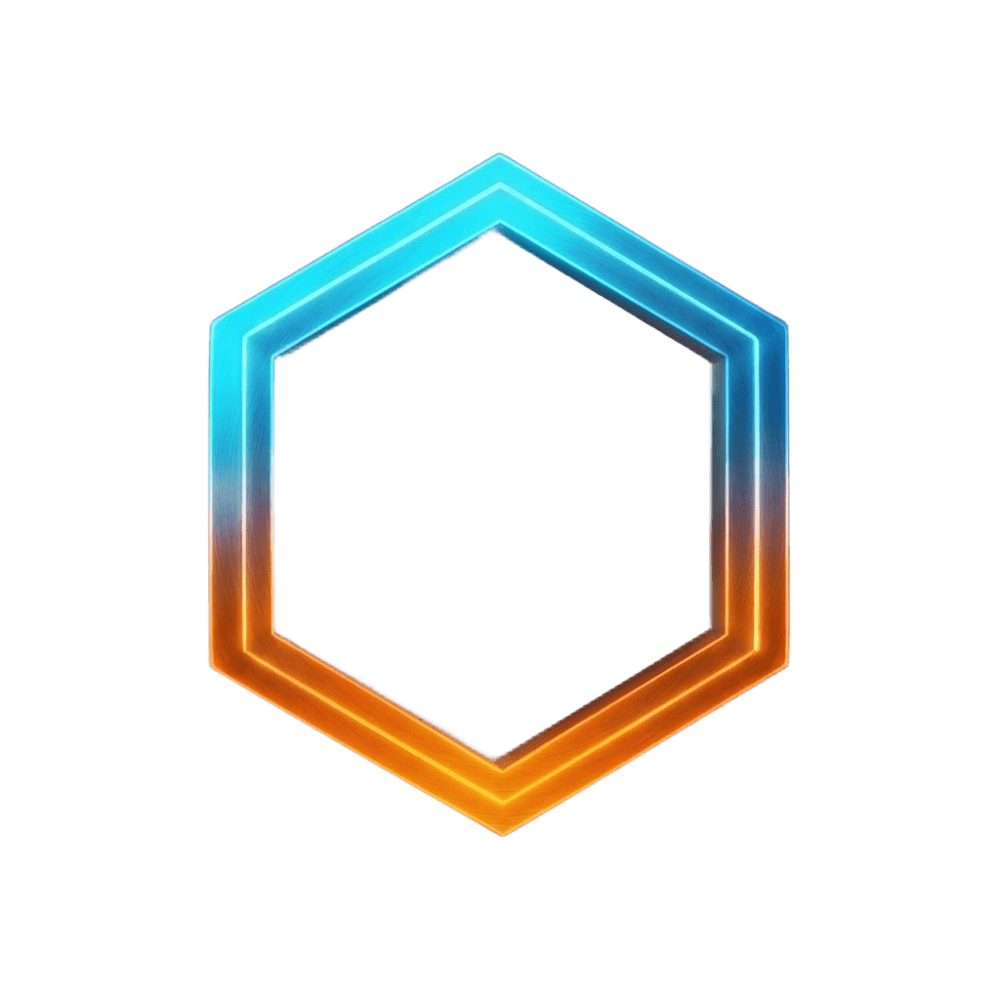

Error 404
Esta página se perdió en el flujo
La dirección no existe o cambió de lugar. Vuelva al inicio o escríbanos por WhatsApp: respondemos el mismo día.

Error 404
La dirección no existe o cambió de lugar. Vuelva al inicio o escríbanos por WhatsApp: respondemos el mismo día.